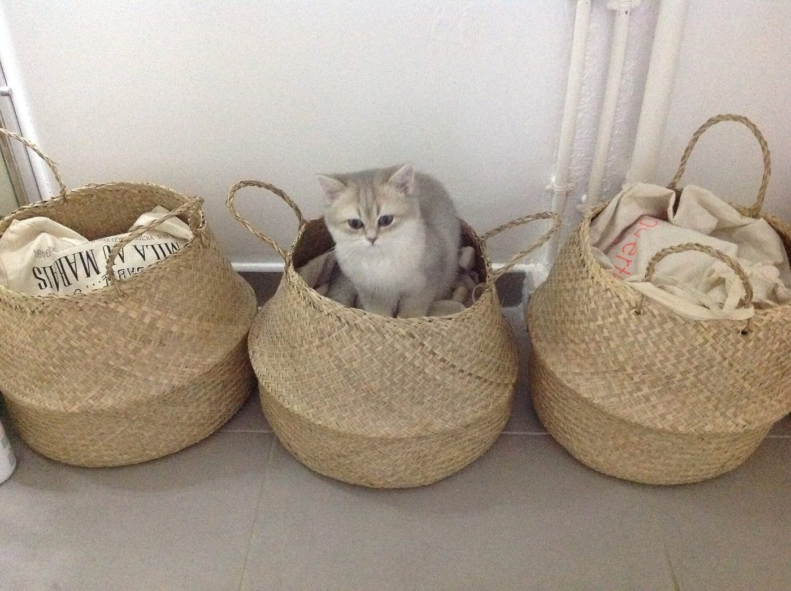

Over Cattery Viola
Cattery Viola is een kleine fokkerij in Maastricht, volledig gericht op de Britse korthaar.
Waarom de Britse korthaar
We kozen voor dit ras vanwege het rustige, liefdevolle karakter en de prachtige, dichte vacht. Juist omdat we klein zijn, kunnen we elk kitten persoonlijke aandacht geven.
Zo groeien onze kittens op
Hoe onze kittens opgroeien: [zelf invullen: bijv. in huis, socialisatie, dagelijkse omgang]
We vinden het belangrijk dat een kitten op de juiste plek terechtkomt. Daarom nemen we de tijd om je te leren kennen en beantwoorden we graag al je vragen.
Ons verhaal
[zelf invullen: eigen verhaal: sinds wanneer, aangesloten vereniging, ouderdieren]

Voorbeeldbeeld – placeholder